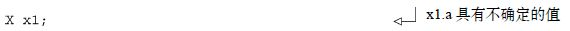

附录A C++11部分语言特性简明参考
C++新标准增加的并不只是对并发的支持，除此之外还有一整套的语言特性以及新的类库。在这一附录中，我会对一些C++11新语言特性进行一番概述，这些特性有助于我们理解Thread库以及本书的其他内容。它们之中除了thread
_local
（参见A.8节）外，与并发都没有直接的联系，但在进行多线程编程的时候却很实用。这里涉及的内容，都是对简化代码或提高代码可读性所必需（如右值引用）或者很重要的。使用了这些特性的代码或许刚开始会因为不为大家所熟知，而显得很难懂，但当你熟悉它们之后，结果就会反过来。随着C++11逐渐流行开来，利用这些特性的代码就会变得稀松平常。
话不多说，让我们首先来看看右值引用（rvaluereferences） ，在线程库中，为了更好地在对象间进行线程、锁或者其他任何东西的所有权转换，右值引用被广泛地使用。
A.1 右值引用
如果你曾做过C++编程，就会对引用很熟悉。C++的引用允许我们为一个现有的对象创建一个新的名字，所有通过引用完成的访问和修改操作都会影响其本体。例如，
迄今为止我们所使用的引用都是左值引用（lvaluereferences） 。左值（lvalue） 这一术语来源于C语言，用来指代那些可以用在赋值表达式左侧的东西，具名对象、在栈和堆上分配的对象，或者其他对象的成员，总之就是有确定存储空间的东西。而术语右值（rvalue） 也是源自C语言，指的是只能在赋值表达式右侧出现的东西，如字面值和临时对象。左值引用只能被绑定到左值，不能绑定到右值。例如，你不能这样写：
因为42是一个右值。好吧，这不是太准确；你一直能够将一个右值绑定到const
左值引用上：

但是，在右值引用之前，为了能够将临时对象作为引用参数传递给函数，C++标准故意设置了一个例外。允许进行隐式转换，所以你可以这样写：
无论如何，C++11标准引入了只能 绑定到右值，而不能绑定到左值的右值引用（rvaluereferences） ，在声明的时候从使用一个&符号改为使用两个&符号：

于是，你可以通过函数重载，让一个重载版本接受左值引用，另一个接受右值引用，来决定函数的形参是左值还是右值，这就是移动语义（movesemantics） 的基础。
A.1.1 移动语义
右值通常是临时对象，因此可以被自由地修改。如果已知函数的形参是一个右值，那么就可以将它用作临时存储，或者“窃取”其内容而不影响程序的正确性。这就意味着，你可以移动（move）
右值参数的内容，而不是复制（copy）
其内容。对于大型的动态结构，这样做可以节约大量的内存开支，并且能够提供很大的优化空间。考虑一个函数，它接受一个std::vector<int>
类型的形参，并且在内部复制一份以便于在不影响原数据的情况下进行修改。以往的做法是，将这个参数作为一个常量左值引用，并且在内部进行复制。
这就允许函数同时接受左值和右值，但每次都被迫进行一次复制。如果你用一个接受右值引用的版本重载该函数，你就可以避免在右值的情况下做复制，因为你明白可以自由地修改原始值，
现在，如果该函数是类的构造函数，你就可以窃取右值的内容，并且在新实例中使用它们。考虑清单A.1列出的类，在默认构造函数中分配了一大块内存，它会在析构函数中被释放。
清单A.1 具有移动构造函数的类
拷贝构造函数（copyconstructor）
❶正是按照你所期望的那样定义的，分配一个新的内存块，然后将数据复制进去。然而，你还可以编写一个通过右值引用接受原值的构造函数❷，这就是移动构造函数（moveconstructor）
。在这个例子里，仅仅是把数据的指针
复制一份，然后赋以other
实例一个空指针，这样就可以节约大量的内存空间和从右值创建变量的时间。
对于类X
而言，移动构造函数仅仅是一项优化，但在有些场合，即便当提供一个拷贝构造函数是毫无意义的时候，移动构造函数也有其意义。例如，std::unique
_ptr<>
的全部意义就在于每个非空实例都是指向其对象的唯一指针，因此拷贝构造函数是没有意义的。然而，移动构造函数允许在实例间传送指针的所有权，并且允许std::unique
_ptr<>
被用作函数的返回值——指针被移动
而不是被复制
了。
如果你希望显式地从一个你确信不会再使用的命名对象中移动数据，你可以通过使用static
_cast<X&&>
或者调用std::move()
来将其转换为右值：
当你希望将参数值移入局部变量或成员变量的时候，就可以从中获益，因为一个右值引用参数虽然可以绑定到右值，但在函数内部，却是被视为左值的：
移动语义在Thread类库中被广泛使用，既可以用在对于复制没有语义上的意义但资源可以被转移的地方，也可以作为一项优化，以避免反正会被销毁掉的源所带来的复制开销。在2.2节的一个例子中，你曾看到我们用std::move()
将一个std::unique
_ptr<>
实例传送到一个新建的线程中，然后在2.3节中，我们又看到了在std::thread
实例间传送线程的所有权。
std::thread
、std::unique
_lock<>
、std::future<>
、std::promise<>
和std::packaged
_task<>
都是不可复制的，但它们都具有移动构造函数，允许相关资源在实例间进行传输，并且支持它们作为函数的返回值。std::string
和std::vector<>
可以被复制，但它们同样具有移动构造函数和移动赋值操作符，以此来避免大量数据作为右值时的复制开销。
C++标准库并不会对显式移入另一个对象的对象做任何处理，除了销毁和对其赋值（复制或者移动，后者更常见）之外。然而，确保一个处于移入状态的类的不变性，是好的习惯。例如，一个用作移动来源的std::thread
实例等效于一个默认构造的std::thread
实例，一个用作移动来源的std::string
实例仍然具备有效状态，尽管无法保证究竟那个状态是什么（即不知道该字符串有多长或者包含什么字符）。
A.1.2 右值引用与函数模板
使用右值引用作为函数模板的参数的最终差别在于如果函数形参是对模板参数的右值引用，如果提供了一个左值，自动模板参数类型推断会将类型推断为左值引用，如果提供的是右值，则推断为普通的无修饰类型。这听起来有些绕口，所以我们来看一个示例。考虑下面的这个函数：
如果按照如下所示用一个右值进行调用，那么T
就会推断为该值的类型：
然而，如果你用一个左值来调用foo
，T
就会被推断为一个左值引用：
因为函数参数声明为T&&
，也就是一个引用的引用，它被视为原始的引用类型。于是foo<int&>()
的签名就是：
这就允许单个函数模板同时接受左值和右值参数，并且被用作std::thread
的构造函数（参见2.1节和2.2节），以便于当参数是右值的时候，受支持的可调用对象能够被移动到内部存储中，而非复制。
A.2 deleted函数
有时候，允许一个函数被复制是没有意义的。std:mutex
就是个典型的例子——如果你真的对互斥元进行复制这意味着什么？std::unique
_lock<>
是另一个例子，某个实例是其所持有锁的唯一拥有者。如果真的对其进行复制，就意味着那个副本也控制该锁，这是没有意义的。在实例间转移所有权，正如A.1.2节中提到的，是有意义的，但那并不是复制。我可以肯定你还遇到过其他的例子。
过去阻止一个类被复制的惯常方法是将拷贝构造函数和拷贝赋值操作符声明为私有的，并且不提供其实现。如果有任何类外部的代码试图复制一个实例，将会导致一个编译时错误，如果任何类成员函数或者友元试图复制一个实例，则会导致一个连接时错误（缺少实现所导致）：
在C++11中，委员会认识到这虽然是惯常做法，但同时也认识到这有一些不优雅。于是，委员会提供了一个更加通用的机制，你还可以将其应用到其他场合，你可以通过在函数声明前添加=deleted
，将一个函数声明为已删除的（deleted）
。于是no
_copies
可以写为：
这就比原来的代码更加具有描述性，并且清楚地表达了意图。这也允许编译器给出更具描述性的错误信息，并且将你在类的成员函数内执行拷贝的错误从连接时转移到了编译时。
如果在删除了拷贝构造函数和拷贝赋值操作符的同时，显式编写了移动构造函数和移动赋值操作符，该类就变成只能移动的，就像std::thread
和std::unique
_lock<>
一样。清单A.2展示了这种只移动类型的实例。
清单A.2 简单的只移动类型
只移动对象可以作为函数参数传入，也可以从函数中返回。但如果你希望从一个左值移入，你必须总是显式地使用std::move()
或者static
_cast<T&&>
。
你可以将=delete
标识符应用到任意函数，而不仅仅是拷贝构造函数和拷贝赋值操作符。这可以清楚地表示该函数是不可用的，但并不仅限于此。一个被删除的函数按照通常的方式参与重载方案，并且当它被选中时仅导致一个编译时错误，这可以用来移除特定的重载。例如，如果你的函数接受一个short
类型参数，你可以通过编写一个接受int
类型变量的重载版本并将其声明为被删除的，来阻止截断int
型值：

但凡尝试用int
来调用foo
，现在都会遇到编译错误，调用者必须显式地将值转换为short
：
A.3 defaulted函数
删除的函数允许你显式声明一个函数未被实现，而默认的（defaulted） 函数则恰恰相反，它们允许你告诉编译器必须为你编写这个函数，作为其“默认”实现。当然，你只能对编译器可以自动生成的函数这样做，包括默认构造函数、析构函数、拷贝构造函数、移动构造函数、拷贝赋值操作符和移动赋值操作符。
那你为什么会要这么做呢？以下是一些可能的原因。
-
为了改变函数的可访问性。
在默认情况下，编译器生成的函数是
public的。如果你希望将它们变为protected或者private，你就得亲自去编写它们。通过将它们声明为defaulted，你就可以让编译器去编写这些函数，同时又改变它们的访问级别。 - 作为注解 。即使编译器生成的版本足够使用，仍然值得像这样将其显式进行声明，以便于你或者其他人将来再看代码的时候能够清楚地了解这是有意为之。
- 为了强制编译器去生成该函数，否则它们可能不会这么做。 典型的是针对默认构造函数，只有在没有用户自定义构造函数的时候它才通常会由编译器生成。如果你需要自定义一个拷贝构造函数（举个例子），你仍然可以通过声明一个defaulted的默认构造函数，而让编译器生成它。
- 为了将一个析构函数设为虚拟的，将其留给编译器来生成。
-
强制声明一个特定的拷贝构造函数，如令其接受一个非
const引用的源参数而不是一个const引用 。 - 利用编译器生成函数的一些特定属性，如果你自己提供实现的话，可能会失去它们 ——这一点我们稍后会提及。
类似于deleted函数通过后缀=delete
来进行声明，defaulted函数只需要在声明后添加=default
来进行声明，如：
我之前提到过编译器生成的函数可以具有一些特殊的属性，而在用户定义的版本中却无法获得。其中最大的区别就是编译器生成的函数可以是平凡的（trivial） 。这会带来包括下面所述的一些后果。
-
具备平凡的拷贝构造函数、平凡的拷贝赋值操作符和平凡的析构函数的对象可以被
memcpy和memmove复制。 - constexpr函数（参见A.4节）所使用的字面值类型必须具有一个平凡的构造函数、拷贝构造函数和析构函数。
- 拥有平凡的默认构造函数、拷贝构造函数、拷贝赋值操作符和析构函数的类可以用在一个具有用户定义构造函数和析构函数的联合体中。
-
具有平凡的拷贝赋值操作符的类可以在
std::atomic<>类模板（参见5.2.6节）中使用，用来提供该类型值的原子操作。
仅将函数声明为=default
并不能使其成为平凡的（只有在类同时支持所有其他条件的时候，相应的函数才能成为平凡的），但如果在用户代码中显式地编写该函数，则会阻止其成为平凡的。
具有编译器生成函数和用户提供的等效函数的类之间的第二个不同，就是没有用户提供的构造函数的类可以作为聚合体（aggregate） ，并且可以通过一个聚合初始化器进行初始化：
在这里，x.a
被初始化为42
，x.b
被初始化为3.141
。
编译器生成的函数和用户提供的等效函数之间的第三点区别非常深奥，仅仅适用于默认构造函数，而且仅仅是那些满足特定条件的类的默认构造函数。考虑下面这个类：
如果你不使用初始化器创建类X
的实例，那么其中的int(a)
会被默认构造（defaultinitialized）
。如果该对象拥有静态存储期，那么它会被初始化为零；否则，它会拥有一个不确定的值，如果在其未被赋予新值之前访问它，可能会导致未定义的行为：

另一方面，如果你通过显式地调用默认构造函数来初始化X
的实例，那么a
会被初始化为零：
这种怪异的特性同样延伸至基类和成员。如果你的类拥有编译器生成的默认构造函数，并且所有数据成员和基类同样拥有编译器生成的默认构造函数，则那些基类和内置类型成员的数据成员也会如此，或是留下一个不确定的值，或是初始化为零，这取决于外部的类的默认构造函数是否被显式调用。
尽管这条规则很混乱并且容易导致错误，但它却有其作用，并且如果你自己编写默认构造函数，你会失去这条特性。像a
这样的数据成员总是被初始化（因为你指定了一个值或者显式默认构造函数）或者总是未被初始化（因为你没有这么做）：
如果你像第三个例子❶中那样，从X
的构造函数中省略a
的初始化，那么对于X
的非静态实例，a
未被初始化，对于具有静态存储期的X
，a
被初始化为零。
在通常情况下，如果你手动编写任何其他的构造函数，编译器就不再为你生成默认构造函数，所以如果你需要的话，就得自己去编写它，这意味着你将失去这一奇异的初始化特性。然而，通过显式地将该构造函数声明为defaulted，可以令编译器强制地为你生成默认构造函数，这一特性也会保留下来：
这一特性被用于原子类型（参见5.2节），它们的构造函数就显式地为defaulted。它们的初始值总是未定义的，除非(a)它们具有静态存储时间段（因此被静态地初始化为零）；(b)显式地调用默认构造函数，请求零初始化；(c)显式地指定一个值。注意在原子类型的情况下，用一个值进行初始化的构造函数被声明为constexpr
（参见A.4节），以便允许静态初始化。
A.4 constexpr函数
像42
这样的整型字面值是常量表达式（constantexpressions）
。简单的算术表达式，如23×2-4
，也是如此。你甚至可以使用整数类型的const
变量，它们又是通过由常量表达式组成的新的常量表达式来进行初始化的：
除了使用常量表达式来创建能用于其他常量表达式的变量，还有些事情你只能通过常量表达式来完成。
- 指定数组的边界：
- 指定非类型模板参数的值：
-
在类定义中，为一个
static const的整数类型类数据成员提供一个初始化器：
- 为内置类型或者集合提供一个初始化器，它可被用于静态初始化：
- 像这样的静态初始化可以用来避免初始化顺序的问题以及竞争条件。
上述的这些都不是新生事物，在1998版本的C++标准中你都可以做到。然而，在新标准中，通过引入constexpr
关键字，常量表达式（constantexpression）
的构成被扩展了。
constexpr
关键字主要作为函数修饰符。如果函数的参数和返回值满足特定的要求，并且函数体足够简洁，该函数就可以声明为constexpr
，这样它就可以在常量表达式中被使用，比如：
在这里，array
会拥有25条记录，因为square
被声明为constexpr
。当然，仅仅因为该函数可以
被用于常量表达式并不意味着它的所有用法都自动地成为常量表达式。
在这个例子中，dummy
不是一个常量表达式❶，所以square(dummy)
也不是（仅是一个常规的函数调用），因此也不可被用来指定array
的边界。
A.4.1 constexpr与用户定义类型
到目前为止，所有的示例都是用的内置类型比如int
。然而，新C++标准允许常量表达式可以是任何满足字面值类型
要求的类型。如果要一个类型具有字面值类型资质，以下几点必须全部满足。
- 必须具备平凡的拷贝构造函数。
- 必须具备平凡的析构函数。
- 所有非静态数据成员和基类必须是平凡的类型。
-
必须具有一个平凡的默认构造函数或者
constexpr构造函数，而非拷贝构造函数。
我们将马上看一看constexpr
构造函数。现在，我们关注一下具有平凡的默认构造函数的类，比如下面列出的CX
类。
清单A.3 具有平凡默认构造函数的类
注意，我们显式地将默认构造函数❶声明为defaulted
（参见A.3节），这是为了在面对用户定义构造函数❷的时候保持它的平凡性质。因此该类型满足作为字面值类型的全部条件，你就可以将其用在常量表达式中，比如，提供一个constexpr
函数来创建新的实例：
你还可以创建一个简单的constexpr函数来复制其参数：
不过这差不多就是所有你可以做的事情了——一个constexpr
函数仅能调用其他的constexpr
函数。所以你能够
做的，就是将constexpr
应用至CX
的成员函数和构造函数：
注意，get
_a()
❶后的const
限定符现在是多余的，因为使用constexpr
已经暗示这一点了。即便省略了const
限定符，get
_b()
仍然是const
的。现在可以定义如下所示的更加复杂的constexpr
函数。
然而有趣的是，如果你所需要的仅仅是一个更加优雅的计算数组界限的方式或者一个完整的常数，这样做会花费大量的精力。引入用户定义类型的常量表达式和constexpr
函数的主要优点，就是由常量表达式初始化的字面值类型对象会被静态初始化，于是它们的初始化就避免了竞争条件和初始化顺序问题。
这同样包括了构造函数。如果构造函数被声明为constexpr
，且构造函数的参数是常量表达式，那么该初始化就是一个常量初始化（constantinitialization）
并且作为静态初始化阶段的一部分来进行。这是C++11中为并发而设的最重要的变化之一
，通过允许用户自定义构造函数仍可进行静态初始化，你可以在其初始化时避免所有的竞争条件，因为保证了它们在所有代码运行前就被初始化。
以上对于像std::mutex
（参见3.2.1节）或std::atomic<>
（参见5.2.6节）之类的特别重要——你可能想要使用一个全局实例来同步访问其他变量，并在访问过程中避免竞争条件，而如果互斥元受限于竞争条件，前面所述的就将无法实现，所以std::mutex
的默认构造函数声明为constexpr
，以确保互斥元的初始化总是作为静态实例化阶段的一部分来完成的。
A.4.2 constexpr对象
到目前为止我们看到constexpr
应用在函数上，它同样可以被应用于对象。这主要用于检测目的，它可以确认该对象是通过常量表达式、constexpr
构造函数或由常量表达式构成的初始化器来初始化的。它也会将对象声明为const
：
A.4.3 constexpr函数要求
为了将一个函数声明为constexpr
，它必须满足一些要求。如果不满足这些要求，将其声明为constexpr
会引起编译时错误。constexpr
函数所需的要求如下所列。
- 所有的参数必须是字面值类型。
- 返回值类型必须是字面值类型。
-
函数体只能由单个
return语句组成。 -
return语句中的表达式必须是常量表达式。 -
所有的构造函数和用于构造表达式返回值的转换运算符必须是
constexpr。
这些看起来很直接：你必须能够将函数内嵌到常量表达式中，仍然形成一个常量表达式，你也不能够修改任何东西。constexpr
函数是无副作用的纯函数
。
对于constexpr
类成员函数，还有些附加的要求。
-
constexpr成员函数不能是虚拟的。 - 函数作为成员的这个类必须是字面值类型。
对于constexpr
构造函数，规则又有点不同。
- 构造函数体必须是空的。
- 每个基类必须被初始化。
- 每个非静态的数据成员必须被初始化。
- 成员初始化列表中使用的所有表达式必须具有常量表达式资质。
-
被选中用以初始化数据成员和基类的构造函数必须是
constexpr构造函数。 -
构造数据成员和基类的表达式里所使用到的所有构造函数和转换运算符都必须是
constexpr的。
这是与针对函数而言相同的一组规则，区别在于没有返回值，所以没有return
语句。与之不同的是，构造函数在成员初始化列表中初始化所有的基类和数据成员。平凡的拷贝构造函数是隐式的constexpr
。
A.4.4 constexpr与模板
如果模板的某个特定实例化的参数和返回值不是字面值类型，当constexpr
被应用到函数模板或者类模板的成员函数上的时候，此关键字会被忽略。这就允许你编写这样的函数模板，当模板参数类型合适的时候它是constexpr
，否则就是普通的inline
函数，例如：
该函数必须满足作为constexpr
函数的其他所有要求。你不能声明一个具有多条语句的函数为constexpr
仅仅因为它是一个函数模板，这仍然是编译错误。
A.5 lambda函数
lambda函数是C++11标准中最让人激动的特性之一，因为它们可以极大地简化代码，以及大量消除与编写可调用对象相关的样板。C++11 lambda函数语法允许一个函数在另一个表达式中需要它的地方进行定义。这对于有些东西非常有用，如提供给等待函数std::condition
_variable
的断言（参见4.1.1节），因为它允许语义以可访问的变量的形式快速被表达，而不是通过一个函数调用操作来获取类中成员变量的所需状态。
一个最简单的lambda表达式 定义了一个不接受参数的、只依赖于全局变量和函数的自包含函数，甚至不必返回值。这样的lambda表达式就是包括在一对花括号中的一系列语句，之前缀以方括号（lambda引导符） 。
在这个例子中，lambda表达式被紧随其后的一对括号调用了，但通常并不这样做。首先，如果你打算直接调用它，你一般用不着lambda，而是将语句直接写在源代码处。更通常的情况是，将其作为参数，传给接受可调用对象作为参数的函数模板。在这种情况下，它可能需要接受参数，或者返回一个值，或两者兼有。如果需要接受参数，你可以像普通函数那样，在lambda引导符后面加上参数列表。例如，下面一段代码将向量的所有元素写入std::cout
，以换行为分隔。
返回值几乎同样简单。如果lambda函数体由单条return
语句组成，那么lambda的返回类型就是待返回表达式的类型。例如，你可能会用类似下面所示的简单lambda，来等待std::condition
_variable
（参见4.1.1节）要设置的标志位。
清单A.4 具有推断返回类型的简单lambda
传给cond.wait()
的lambda返回类型是通过data
_ready
的类型推断的，即bool
。一旦条件变量从等待中被唤醒，接下来就会调用该互斥元锁定的lambda，并且只会在data
_ready
为true
的时候，从对wait()
的调用中返回。
那要是你无法将lambda语句体写成单条的return
语句呢？这种情况下你就得显式指定返回类型。在语句体只有一条return
语句的时候，你依然可以这样做，但如果lambda语句体更为复杂的时候，你必须
这样做。返回类型是通过在lambda参数列表后跟以一个箭头（->）加返回类型的方式进行指定的。如果你的lambda不接受任何参数，你仍然需要包含空的参数列表，以便显式指定返回值。你的条件变量预测就可以写成，
通过指定返回类型，你可以扩展这个lambda，来记录消息或者做些更复杂的处理。
尽管像这样的简单lambda都很强大并能够极大地精简代码，可它们的真正实力是在捕捉局部变量的时候才能发挥出来。
引用局部变量的lambda函数
使用[]作为lambda引导符的lambda函数不能引用任何包含它的作用域内的局部变量，它们只能使用全局变量以及作为参数传入的东西。如果你希望访问某个局部变量，你需要捕捉
它。最简单的做法就是通过使用[=]
作为lambda引导符，来捕捉局部作用域中的整个变量集。这就是所有你需要做的——你的lambda现在可以在其被创建的时候访问局部变量的副本
。
为了实际地了解这一点，考虑下面这个简单的函数。

每次调用make
_offseter
都会通过std::function<>
函数包装器来返回一个新的lambda函数对象。返回的函数会将所提供的参数添加上指定的偏移值。比如：
这段代码会输出54,135
两次，因为在第一次调用make
_offseter
时返回的函数，总是将所提供的参数加42，而第二次调用make
_offseter
返回的函数，总是将所提供的参数加123。
这是捕捉局部变量的最安全形式，一切都是被复制的，所以你可以返回一个lambda并在原函数作用域之外去调用它。但这并非唯一的选择，相反的，你可以选择通过引用来捕捉所有的东西。在这种情况下，一旦lambda所引用的变量因为离开其所在的函数或者语句块作用域而被销毁，调用该lambda就成为一种未定义的行为，正如在其他情况下引用一个已经被销毁的变量一样。
以引用的方式捕捉所有局部变量的lambda函数使用[&]
来引导，如下面的例子所示，
上个例子中，我们在make
_offseter
函数里使用了lambda引导符[=]
来捕捉偏移量的副本；这个例子的offset
_a
函数使用lambda引导符[&]
，通过引用来捕捉offset
❷。offset
的初始值是否为42❶并不重要，调用offset
_a(12)
的结果总是取决于offset
的当前值。尽管我们是在制造第二个（相同的）lambda函数offset
_b
❹之前就将offset
值改为了123❸，由于第二个lambda还是通过引用进行捕捉的，所以结果取决于offset
的当前值。
现在，当我们打印第一行输出的时候❺，offset
仍然是123，所以输出是135,135
。然而，在第二行输出的地方❼，offset
已经被改为99❻，所以这时候的输出是111,111
。offset
_a
和offset
_b
都是将offset
的当前值（99）加到所提供的参数（12）上。
其实，C++之所以称为C++，你并不会受困于这些非黑即白的选项，你可以选择通过复制捕捉一部分参数，然后通过引用捕捉一部分，并且你可以选择仅仅捕捉你显式选定的那些变量，这些都可以通过调整lambda引导符实现。如果你希望复制
所有用到的变量，但是有一两个例外，你可以使用lambda引导符的[=]
形式，然后在等号后面跟上引用捕捉的变量列表，变量之前冠以&
符号。下面的例子将会打印1239
，因为i
被复制进lambda，而j
和k
是引用捕捉的。
另外，你可以默认引用捕捉，但是通过复制捕捉变量的一个指定子集。在这种情况下，使用lambda引导符的[&]
形式，但在&
号后面跟以复制捕捉的变量列表。下面的例子会打印5688
，因为i
是引用捕捉的，而j
和k
是复制的。

如果你只想捕捉提名的变量，你可以省略前面的=
或&
，仅仅列出需要捕捉的变量，通过前缀&符号来表明引用捕捉而非复制。下面的代码将会打印5682
，因为i
和k
通过引用捕捉，而j
是复制的。
最后这个变化形式允许你确保只有意料之中的变量被捕捉，因为引用任何不在捕捉列表中的局部变量都会导致编译时错误。如果你选择了这个选项，而包含lambda的函数又是一个成员函数，你就得小心地访问类成员。
类成员不能被直接捕捉，如果你希望从lambda中访问类成员，你必须将this
指针添加到捕捉列表中先行捕捉。在下面的例子中，lambda捕捉了this
，以允许访问类成员some
_data
。
在并发的上下文中，lambda表达式最大的用处是作为std::condition
_variable::wait()
（参见4.1.1节）以及std::packaged
_task<>
（参见4.2.1节）的断言，或是打包小任务的线程池。它们也能作为线程函数（参见2.1.1节）传给std::thread
的构造函数，或是作为使用并行算法的函数，比如parallel
_for
_each()
（参见8.5.1节）。
A.6 变参模板
变参模板，指的是参数数量可变的模板。正如你一直以来使用的变参函数一样，比如printf
就可以接受可变数量的参数，你现在有了模板参数数量可变的变参模板。变参模板的使用贯穿整个C++线程库。比如，std::thread
用来启动线程的构造函数（参见2.1.1节）就是一个变参函数模板，std::packaged
_task<>
（参见4.2.2节）是一个变参类模板。从使用者的角度来看，知道这个模板可以接受不限数量的参数就足够了，但如果你想编写一个这样的模板，或者你对它是如何工作的感兴趣，你就需要知道其中的细节。
变参函数是通过函数参数列表中的省略号（...
）来声明的，与之类似，变参模板的声明方式，是在模板参数列表中的省略号。
你也可以在模板偏特化中使用变参模板，即便是主模板并非变参的。比如，std::packaged
_task<>
（参见4.2.1节）的主模板只是一个带有单个模板参数的简单模板。
然而，该主模板没有在任何地方进行定义，它仅仅是作为偏特化的占位标志。
正是这一偏特化里包含了该类的真正定义。在第4章中，你见过这样的写法，用std::packaged
_task<int(std::string, double)>
来声明一个在调用时接受std::string
和double
作为参数的任务，然后通过std::future<int>
提供结果。
该声明展示了变参模板的另外两项特性。第一个特性相对简单，你可以在一个声明中同时包含普通的模板参数（比如ReturnType
）和变参（Args
）。第二个特性演示了在特化的模板参数列表中Args...
的用法，显示了当模板实例化时组成Args
的类型会在这里列出。事实上由于这是偏特化，它按照模式匹配来工作；在实际的实例化中，此上下文中出现的类型会被捕捉为Args
。变参Args
称为参数包（parameterpack）
，而对Args…
的使用称为包展开（packexpansion）
。
与变参函数类似，变参部分既可以是空列表也可以有很多条目。比如，在std::packaged
_task<my
_class()>
中ReturnType
参数是my
_class
，Args
参数包是空的，然而在std::packaged
_task<void(int, double, my
_class&, std::string*)>
中ReturnType
是void
，Args
是int
、double
、my
_class&
、std::string*
的列表。
展开参数包
变参模板的强大之处，体现在你如何去进行包的展开，即你并不局限于仅仅将类型列表原样展开。首先，你可以在任何需要类型列表的地方直接使用包展开，比如另一个模板的参数列表。
在这个例子中，唯一的成员变量data
是std::tuple<>
的一个实例，它包含了所有指定的类型，所以dummy<int, double, char>
拥有类型为std::tuple<int, double, char>
的成员。你可以用普通类型来整合包展开。
这一次，此元组有一个额外的（第一个）std::string
类型的成员。有趣的部分是你可以使用包展开创建一个模式，它接下来会针对每一个展开的元素复制。你通过将标识包展开的……
放到模式的末尾来做到这一点。例如，不是仅创建你的参数包里提供的元素元组，而是可以创建指向这些元素的指针元组，或者甚至指向你的元素的std::unique
_ptr<>
元组：
类型表达式可以如你所想的那样复杂，前提是参数包出现在类型表达式中，并且该表达式后面跟着标识展开的……。当参数包被展开时，包里的每一项会代入类型表达式，以生成结果列表中的相应项。因此，如果你的参数包Params
包含int,int,char
的类型，那么std::tuple<std::pair<std::unique
_ptr<Params>,double>
>
的展开就是std::tuple<std::pair<std::unique
_ptr<int>,double>,std::pair<std::uniqueptr<int>,double>,std::pair<std::unique
_ptr<char>,double>>
。如果包展开被用作模板参数列表，该模板无需具有变参，但如果它确实没有，那么包的大小必须恰好匹配模板参数要求的数量。
你可以对包展开做的第二件事情，是用它来声明一个函数参数列表。
这样创建一个新的参数包args
，它是函数参数的列表而不是类型的列表，你可以像之前那样用...
来展开它。现在，你可以用带有包展开的模式来声明函数参数，正如你在其他地方使用的展开包模式一样。比如，std::thread
利用它来通过右值引用接受所有的函数参数（参见A.1节）：
这个函数参数包可以用来通过在被调用函数的参数列表里指定包展开，来调用另一个函数。正如类型展开一样，你可以为结果参数列表里的每个表达式使用一个模式。例如，一个常见的右值引用习惯用法是使用std::forward<>
来保持所提供函数参数的右值性：

注意在这个例子里，包展开同时包含了类型包ArgTypes
和函数参数包args
，以及整个表达式后面的省略号。如果你像这样调用bar
：
那么展开成为：
正确地将第一个参数作为左值引用传递给foo
，同时将以右值引用传递另一个参数。
你可以对参数展开做的最后一件事是使用sizeof...
操作符来获取其大小。这是非常简单的：sizeof...(p)
就是参数包p
中的元素个数。无论是类型参数包还是函数参数包，结果都是一样的。这可能是唯一一个你可以使用参数包并且不在后面跟上省略号的情况；省略号已经是sizeof...
运算符的一部分。下面的函数返回提供给它的参数个数：
如同普通的sizeof
运算符，sizeof...
的结果是一个常量表达式，所以它可以被用来指定数组的边界等等。
A.7 自动推断变量的类型
C++是一门静态类型语言，每个变量的类型在编译时都是已知的。不仅如此，作为程序员，你还得指定每个变量的类型。在某些情况下，这将导致非常笨拙的名字，例如，
传统上，有个解决方案那就是使用typedef
来减少类型标识符的长度，并有可能消除类型不一致的问题。这在C++11中仍然有效，但现在有了一种新的方式，如果一个变量在其声明中初始化自一个相同类型的值，那么你可以将类型指定为auto
。在这种情况下，编译器将自动推断变量的类型与初始化器相同。于是，该迭代器示例可以写作：
现在，你不限于只是普通的auto
，你可以修饰它来声明const
变量、指针或引用变量。这里有几个使用auto
的变量声明及其相应的变量类型：
推断变量类型的规则，基于该语言在其他地方推断类型的规则：函数模板的参数。在形如下面格式的声明中：

var
的类型与用相同表达式推断出的函数模板参数相同，区别在于将auto
替换成了模板参数的名字：
这意味着数组类型衰变到指针和引用都被丢弃，除非该类型表达式显式声明变量为引用，例如：
这可大大简化变量的声明，特别是完整的类型标识符很长，或者干脆不可知（例如，在一个模板中的函数调用的结果的类型）。
A.8 线程局部变量
线程局部变量可以在程序中让你为每个线程拥有独立的变量实例。在声明变量时，可以用thread
_local
关键字进行标记，表明它是线程局部的。命名空间范围的变量、类的静态数据成员和局部变量都可被声明为线程局部的，也就是说，具有线程存储期（threadstorageduration）
。
命名空间范围的线程局部变量和线程局部的静态类数据成员，在相同的翻译单元里的首次使用之前被构造，但并没有指定要提前多久。有些实现方式可能在线程启动时构造线程局部变量，有些则可能在他们被各自线程初次使用之前就立即构造了，还有些可能在其他的时点进行构造，或是根据其用途上下文的某种组合。事实上，如果没有一个来自给定的翻译单元的线程局部变量被使用，则压根就不会保证他们会被构造。这就允许动态加载的模块包含线程局部变量——这些变量可以在来自动态加载模块的线程首次引用线程局部变量的时候被构造。
在函数内声明的线程局部变量，是在给定线程的控制流第一次通过其声明时初始化的。如果不由给定的线程调用该函数，则函数内的任何线程局部变量都不被构造。这一行为与局部静态变量是一样的，区别在于它分别适用于每个线程。
线程局部变量与静态变量共享其他属性——他们在所有进一步初始化（如动态初始化）之前是零初始化的。如果线程本地变量的构造引发异常，则调用std::terminate()
来中止应用程序。
所有在给定线程上构造的线程局部变量的析构函数，运行于在线程函数返回时，与构造函数是相反的顺序。由于初始化的顺序是未指定的，因此确保这种变量的析构函数之间没有相互依存关系是很重要的。如果一个线程局部变量的析构函数以异常退出，std::terminate()
会被调用，与构造相类似。
如果一个线程调用std::exit()
或从main()
返回（等效于以main()
的返回值调用std::exit()
），那么该线程
的线程局部变量也会被销毁。如果任何其他线程在应用程序退出时仍在运行，那些线程的线程局部变量的析构函数不会
被 调用。
虽然线程局部变量的每个线程上有一个不同的地址，你仍然可以获得指向这种变量的普通指针。该指针将引用拥有该地址的线程中的对象，并可以用来允许其他线程访问该对象。在一个对象被销毁后再去访问它是未定义的行为（一直都是），所以如果将指向一个线程局部变量的指针传给另一个线程的线程，你需要确保它在其所属线程结束后不被解引用。
A.9 小结
本附录只是蹭了一下C++标准引入的新语言特性的皮毛，因为我们只看了那些对Thread库有积极影响的功能。其他新的语言功能包括静态断言、强类型的枚举、委派构造函数、Unicode支持、模板别名和一个新的统一的初始化序列，以及一系列较小变化。描述所有新功能的详细信息不在本书的范围之内，可能需要另一本专门的书。目前，对完整的标准变更最好的概览，大概是Bjarne Stroustrup的C++11常见问题解答 [1] ，而流行的C++参考书为了涵盖它会及时地作出修订。
希望本附录中所涵盖的新功能简介提供了足够的深度，以展示它们与Thread库有着怎样的关系，并使你能够编写和理解使用这些新功能的多线程的代码。虽然本附录本应为这些特性所涵盖简单用途提供足够的深度，但这仍然只是一份简介，并不是使用这些功能的完整的参考或教程。如果你打算将它们广泛地使用，我建议获取一份这样的参考或教程，以便从中获得最大的益处。
[1] http://www.research.att.com/~bs/C++0xFAQ.html
Table of contents
- 版权信息
- 版权声明
- 内容提要
- 序
- 译者简介
- 致谢
- 前言
- 资源
- 简要目录
- 第1章 你好，C++并发世界
- 第2章 管理线程
- 第3章 在线程间共享数据
- 第4章 同步并发操作
- 第5章 C++内存模型和原子类型上操作
- 第6章 设计基于锁的并发数据结构
- 第7章 设计无锁的并发数据结构
- 第8章 设计并发代码
- 第9章 高级线程管理
- 第10章 多线程应用的测试与调试
- 附录A C++11部分语言特性简明参考
- 附录B 并发类库简要对比
- 附录C 消息传递框架与完整的ATM示例
-
附录D C++线程类库参考
- D.1 <chrono>头文件
- D.2 <condition_variable>头文件
-
D.3 <atomic>头文件
- D.3.1 std::atomic_xxx typedef
- D.3.2 ATOMIC_xxx_LOCK_FREE宏
- D.3.3 ATOMIC_VAR_INIT宏
- D.3.4 std::memory_order枚举
- D.3.5 std::atomic_thread_fence函数
- D.3.6 std::atomic_signal_fence函数
- D.3.7 std::atomic_flag类
- D.3.8 std::atomic类模板
- D.3.9 std::atomic模板的特化
- D.3.10 std::atomic<integral-type>特化
- D.3.11 std::atomic<T*>偏特化
- D.4 <future>头文件
- D.5 <mutex>头文件
-
D.6 <ratio>头文件
- D.6.1 std::ratio类模板
- D.6.2 std::ratio_add模板别名
- D.6.3 std::ratio_subtract模板别名
- D.6.4 std::ratio_multiply模板别名
- D.6.5 std::ratio_divide模板别名
- D.6.6 std::ratio_equal类模板
- D.6.7 std::ratio_not_equal类模板
- D.6.8 std::ratio_less类模板
- D.6.9 std::ratio_greater类模板
- D.6.10 std::ratio_less_equal类模板
- D.6.11 std::ratio_greater_equal类模板
- D.7 <thread>头文件
- 欢迎来到异步社区！
- 看完了